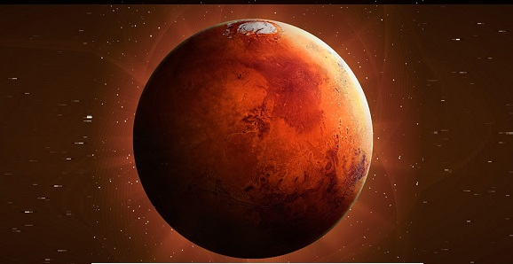

Os babilónios já faziam observações cuidadosas do que eles chamavam de Nergal (A Estrela da Morte), mas tudo o que viam tinham propósitos exclusivamente religiosos. Os gregos são os primeiros a fazer observações mais racionais e identificaram Marte como sendo uma das cinco estrelas errantes (planetas) do céu. O astrónomo grego Hiparco (160 - 125 a.C.) verificou que Marte nem sempre se movia de oeste para leste. As observações do movimentoparente de Marte feitas por Tycho Brahe (1546 - 1601) permitiram a seu discípulo Johannes Kepler descobrir as leis dos movimentos dos planetas, que deram suporte à teoria heliocêntrica de Nicolau Copérnico. Em plena Guerra Fria, em que as potências da época se envolveram numa corrida espacial, os soviéticos são os primeiros a tentar enviar sondas a Marte para descobrir o que se passava no planeta, mas nenhuma delas teve sucesso. Os norteamericanos foram logo de seguida e o sucesso chegou com a segunda tentativa através da sonda Mariner 4 que, em 1965, orbita Marte e consegue tirar a primeira fotografia próxima do planeta, mas de muito fraca qualidade. Os soviéticos só conseguiram fazer pousar uma sonda em Marte em 1974.
